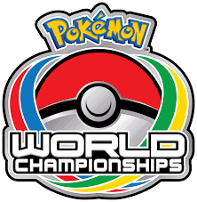
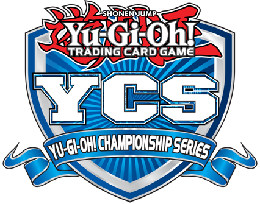
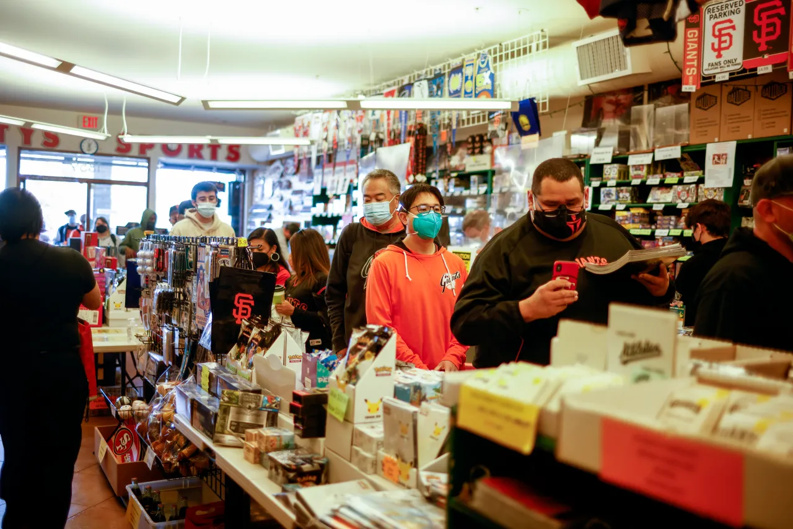

Once trading cards have a good standing in popularity it becomes a task to maintain it, in which the company would have to think of what techniques would keep people buying their product. Promotion cards, limited edition cards, prize cards, and more were enough for trading card games to keep their players enticed to continue supporting them. The sport trading cards however did not have as such broad scope that trading card game companies have access to. Here the focus will be more of the Trading Card Game than the Sports Cards Collectable until the start of a global event.
Collecting Before Covid
For the card games, which also go by TCG, were on the right track to encourage players to buy product. Since the player base also use the cards for table top play, the companies delve into a more serious environment, competitive play. TCGs such as Magic: The Gathering, Pokémon, and Yu–Gi–Oh! had two separate categories of play, casual and competitive play. The competitive side of TCG is a factor of how the playerbase grows, with putting a player's knowledge to the test as they compete with other players for prizes. The prizes earned can be more products of that card game and later on tournament packs. Tournament packs would contain cards that are either exlusive to obtain or cards that already exist but in a higher rarity, or both.
 Competitive play was a mainstay as people visited card shops that are associated with hosting events for that game and conduct sanctioned tournaments for players to earn prizes that could upgrade their decks. Companies associated with the game would host larger scale events promoting the game, and with larger events, the environment gets more intense as skilled players compete for rare prize cards that can only be obtained from such events. The cards hold a high value and are sought out by both collectors and players. The experience of traveling and meeting people who share the same hobby as themselves give a good atmosphere to the playerbase.
Collecting During Covid
In early 2020, the interactions of social outings were cut by the spread of the SARS–Covid–19 Virus, leaving everyone to stay inside their homes for more than a year. People had limited past times to indulge in, and over long periods of time, the curiousity of finding new hobbies arose. While the playerbase was not expansive, they were at least known and with in person play being restricted, the cards lost value in terms of using it for play. The problem of looking for a new hobby went towards adults as they now were given spare time to do thanks to remote work, the times they would spend commuting to their workplace was now free time to spend.
TCG Companies did take a hit as their sales were lowered since people are limited to moving outside, or were not allowed outside at all due to lockdowns. Online ordering was still relevant, so sales of TCG product did not suffer too much.However, with the support of stimulus checks, it wouldn't hurt people too much if they decided to relive their childhood hobbies of collecting cards with the excess money they obtained.
Rebirth of Card Collecting
In the midst of the pandemic, and when restrictions were more loose, adults began to relive their old interest, starting with baseball cards. Local card shops saw a boom of business as people came to purchase collectors packs and feeling the past emotions of pulling their favorite athlete. The TCG scene also recieved a surge of popularity with new and current players searching to buy product, much like their originators. While in person play was restricted, it did not stop people to collect and save their cards for a time when in person play would be finally allowed.
With the upward trend it gained event more popular with the Youtube community. Content creators make pack opening videos showing their reactions of pulling desired cards, also known as chase cards.
A Couple of notable content creators that opened packs during the pandemic are as categorized:
- ADrive
- Leonhart
- Unlistedleaf
- PokeRev
- TeamSamuraiX1
- Ruxin34
- penguinz0 also known as MoistCr1TiKal
- SimplyUnlucky
- CyberKnight
- TruChampionSteven
- TheJwittz
- SimplyUnlucky
- doderfilms
- Stryker Breaks
- Jabs Family
Pokémon
Yu–Gi–Oh!
Digimon the Card Game
Baseball Sport Cards
Which Collectable Card do you think you would be interested in?